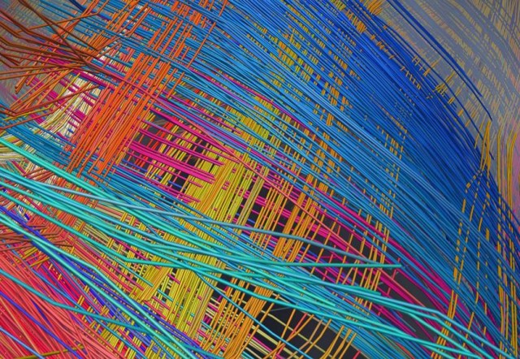
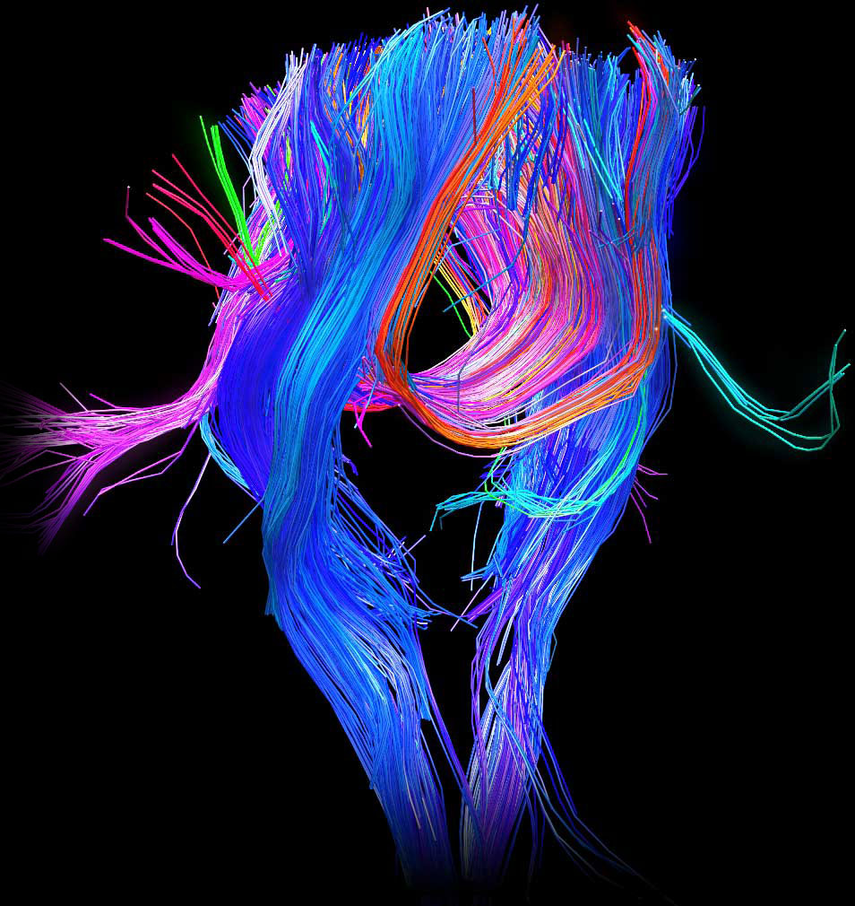

The Human Connectome
 16th February 2014 |
16th February 2014 |  Comments
Comments
Artificial intelligence is a task quite unlike anything we've ever attempted before. Certainly, it will be incredibly demanding on our ability to engineer and create new computing systems. However, our ability to understand ourselves may be more important than anything else. Our brains are incredibly complex organs; without quoting one of the countless sayings about how strange it is, rest assured that it is the most complex system we may know about within biology, or perhaps in the universe itself.
The Human Brain Project, albeit with more specific goals in mind with an actual time-frame. Starting in 2009, its stated 5-year mission was to develop a picture of the neuronal connections in the human brain. It's modeled after the Genome Project, which as we all know, was a huge success.
Using other species as model for the mapping our own connectome is a great way to start. Obviously, the human brain is the most complex neural system we know of. Thus, it is the most difficult to map out. The project has already revealed a lot about the human brain which was previously unknown. For example, it used to be thought that the wiring of the human brain was much like a plate of spaghetti, with random dendrites going all over the place. The reality was much more simple; our wiring is laid out much like a grid, with nerves intersecting at 90 degree angles.

The human brain is a fascinating organ. The series of connections through dendrites have been compared to highways, connecting the insides of a city.

There's quite a way to go before the human connectome is completely finished, but the technology required to scan through the brain matter exists. It's only a matter of time before it's completed. When it is, we will have access to knowledge about a wide range of things like the way that neurons create pathways, or how mental disorders happen. It will be fundamental in helping us to make future discoveries about us, and how our brains work.